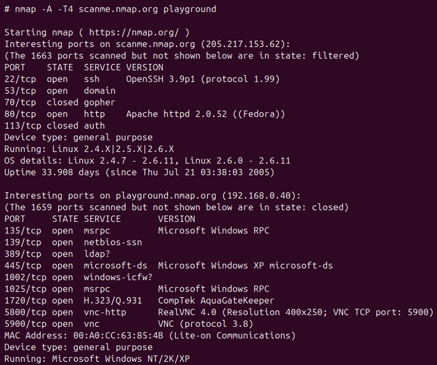

SAÉ 1.01 : Se sensibiliser à l'hygiène informatique et à la cybersécurité
Contexte et cahier des charges
Ce projet se compose de deux volets indissociables : une immersion théorique dans les enjeux de la cybersécurité et une expérimentation technique sur des outils d'analyse réseau. Le cahier des charges imposait de suivre les modules du MOOC "SecNumAcadémie" de l'ANSSI pour forger une culture de l'hygiène numérique, ainsi que de réaliser une présentation orale. Cette présentation devait démontrer notre capacité à utiliser et expliquer différents outils d'analyse (comme Nmap et autres utilitaires de diagnostic) pour comprendre l'état de santé d'un réseau ou d'une machine. L'objectif était d'adopter une posture professionnelle en vulgarisant des techniques d'audit.
Vocabulaire technique utilisé
- Hameçonnage (Phishing) : Technique visant à soutirer des informations confidentielles en usurpant l'identité d'un tiers de confiance.
- Audit réseau : Processus consistant à analyser un réseau pour en identifier les composants et les failles potentielles.
- Scanner de ports : Logiciel permettant de lister les portes d'entrée (ports) ouvertes sur une machine pour vérifier les services exposés.
- Vulnérabilité : Faiblesse dans un système informatique pouvant être exploitée par une personne malveillante.
Apprentissages Critiques (AC)
- AC11.02 : Comprendre l'architecture des systèmes numériques : Mobilisé durant ma phase d'étude théorique pour comprendre les vecteurs d'attaque et le fonctionnement des réseaux.
- AC11.04 : Maîtriser les rôles des systèmes d'exploitation : Concrétisé lors de l'utilisation pratique des outils d'analyse (Nmap) en ligne de commande.
- AC11.05 : Identifier les dysfonctionnements du réseau local : Cœur de ma présentation orale, où j'ai démontré comment détecter des anomalies ou des configurations risquées pour les signaler.
Méthodologie
1. Phase d'appropriation théorique (MOOC SecNumAcadémie)
Bien que je n'aie pas obtenu la certification officielle du MOOC SecNumAcadémie, cet échec relatif résulte principalement de mes difficultés d'adaptation aux méthodes de travail de l'enseignement supérieur lors de ma transition depuis le lycée, une période charnière durant laquelle j'ai dû prioriser mon organisation personnelle pour appréhender ces nouvelles exigences académiques au détriment de la validation formelle du parcours ; toutefois, cette expérience a été un levier de progression indispensable, me permettant de prendre conscience des méthodes de travail nécessaires à mon autonomie et m'incitant désormais à mieux anticiper mes plannings pour conjuguer rigueur technique et réussite administrative.
2. Phase d'expérimentation technique (Outils d'analyse)
Pour ce qui est de l'expérimentation technique, j'ai réalisé un audit réseau approfondi en exécutant la commande nmap -A -T4 afin de scanner simultanément différentes machines cibles, une démarche qui m'a permis d'obtenir une cartographie précise des ports ouverts, d'isoler les versions des services actifs tels que SSH ou HTTP, et de déterminer les systèmes d'exploitation exécutés (Linux et Windows) ; avec le recul, j'ai conscience que la valeur ajoutée de cette SAÉ réside dans l'interprétation critique de ces résultats techniques pour évaluer la surface d'attaque d'un parc informatique hétérogène, une analyse que j'aurais pu pousser encore plus loin en simulant des contre-mesures ou des pare-feu pour observer la variation des données récoltées.
